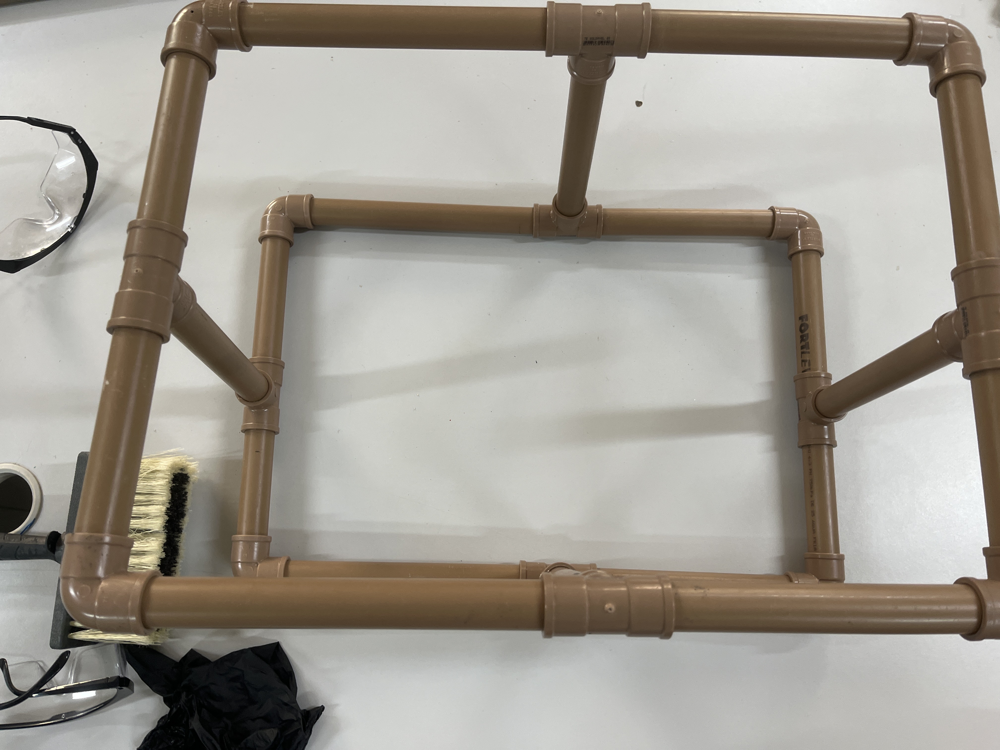
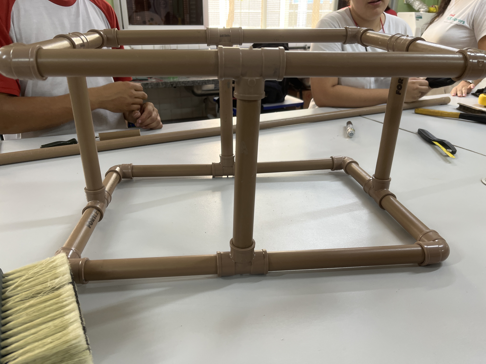
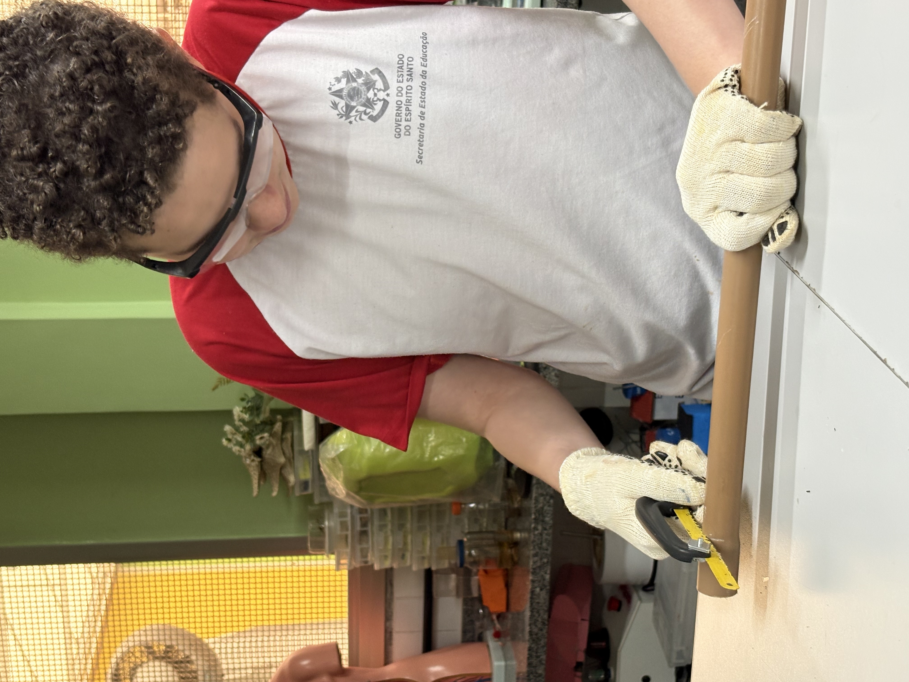
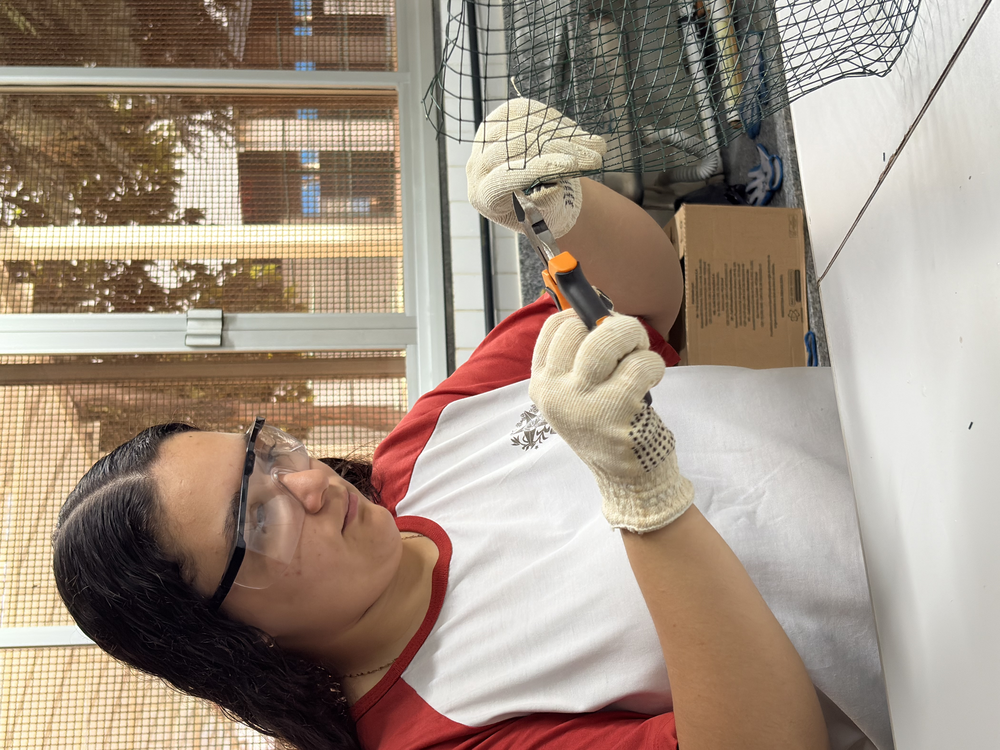
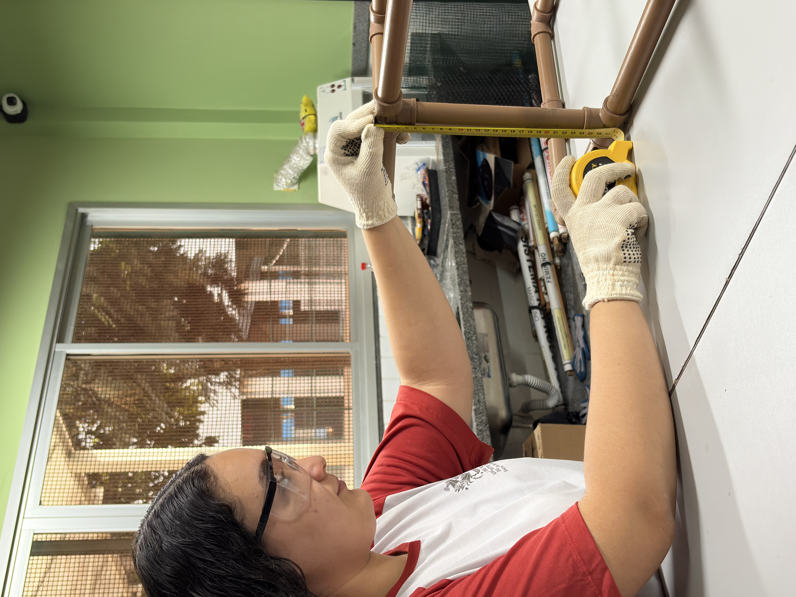
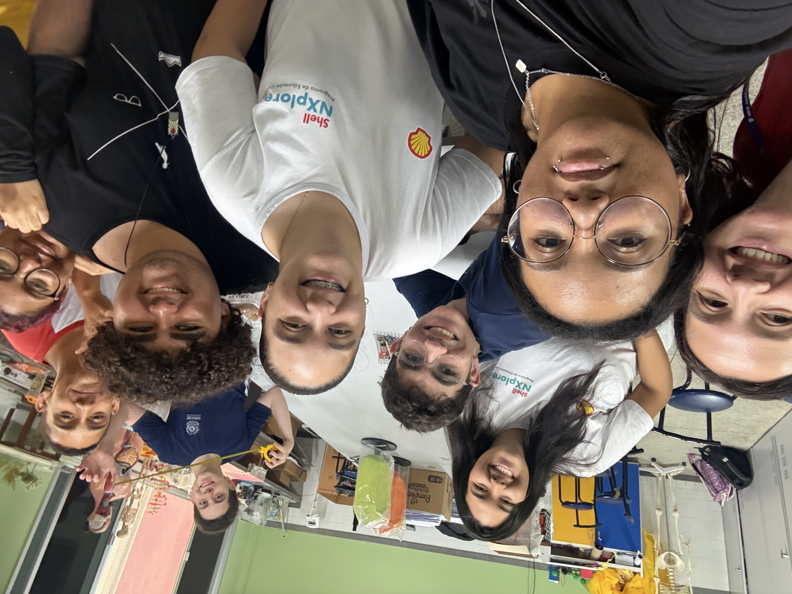
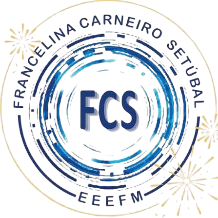

EQUIPE MARLIM
Uma ideia que está tomando forma.
Conheça a evolução da nossa Eco-Peneira.
EXPLORAR O PROJETO ↓Uma ideia que está tomando forma.
Conheça a evolução da nossa Eco-Peneira.
EXPLORAR O PROJETO ↓A sujeira e o lixo acumulado na areia da praia são problemas reais que afetam o ecossistema marinho e a experiência das pessoas. Muito do que danifica nossos oceanos fica escondido abaixo da superfície da areia, onde não é facilmente visível.
A Equipe Marlim identificou essa necessidade e, participando do projeto Shell NXplorers, decidiu desenvolver a Eco-Peneira: uma solução capaz de remover lixos que estão abaixo da superfície da areia, de forma eficiente e sustentável, utilizando apenas materiais recicláveis.
A Eco-Peneira é construída utilizando materiais recicláveis de alta qualidade. O sistema funciona removendo lixos que ficam abaixo da superfície da areia, de forma totalmente sustentável e sem danificar o ecossistema marinho.
O protótipo foi pensado para ser prático, durável, ecológico e eficaz. Usando apenas materiais que podem ser reutilizados, garantimos que a solução não machuca o meio ambiente enquanto protege nossos oceanos.
A Eco-Peneira trabalha removendo sujeira e lixo que estão abaixo da superfície da areia, utilizando apenas materiais recicláveis. O sistema é projetado para ser completamente amigável ao meio ambiente, separando o lixo do material natural da praia sem prejudicar a natureza.
Compromisso: Solução eficiente que protege os oceanos.






Testamos o funcionamento da Eco-Peneira em ambiente real de praia. Validamos se o sistema consegue remover lixo que fica abaixo da superfície da areia sem danificar o ecossistema natural.
Descobrimos que o tubo de PVC que entra em contato com a areia precisa ser ajustado para melhorar a eficiência. O design inicial funcionava, mas havia espaço para otimização na estrutura.
Estamos ajustando o tamanho do cano de PVC que toca a areia para aumentar a eficiência de coleta. Essas mudanças devem resultar em melhor desempenho no próximo ciclo de testes.
A Eco-Peneira foi construída com tubos e conexões de PVC, formando uma estrutura robusta capaz de remover lixo que fica abaixo da superfície da areia.
O sistema está em fase de testes e aperfeiçoamento. Os primeiros testes mostraram que o protótipo funciona, mas pequenos ajustes estão sendo implementados para otimizar a eficiência e o desempenho em ambiente real de praia.
Cada teste nos traz novos aprendizados. A próxima etapa envolve refinar a estrutura para garantir melhor contato com a areia e maior capacidade de coleta de lixo.
🔄 PROJETO EM EVOLUÇÃO

Somos uma equipe de estudantes da EEEFM Francelina Carneiro Setúbal dedicados a transformar ideias em soluções reais e sustentáveis.
Participantes do projeto educacional Shell NXplorers, desenvolvemos juntos a Eco-Peneira: uma solução inovadora construída com materiais recicláveis para resolver o problema de lixo acumulado nas praias sem prejudicar o meio ambiente.
Uma equipe com uma missão: cuidar dos oceanos através da inovação.

Equipe Marlim em frente à EEEFM Francelina Carneiro Setúbal, trabalhando juntos em um projeto que pode fazer diferença nos oceanos.